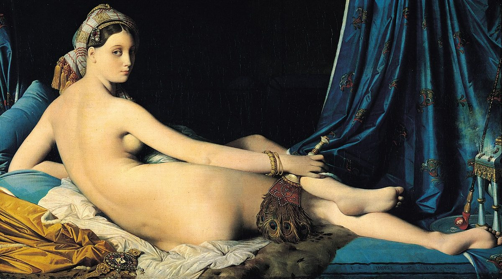

Hidden in the Frame · Louvre Museum, Paris
La Grande Odalisque
Jean-Auguste-Dominique Ingres · 1814 · Oil on canvas, 91 × 162 cm · Room 702 (Denon wing, level 1)

The story
The painting was ordered by Caroline Murat, Queen of Naples and Napoleon's sister. But by the time it was finished in 1814, Napoleon's empire was collapsing, and it was never delivered. In 1819 Ingres exhibited it in Paris – and the critics tore it apart: no bones, no muscles, no anatomy. Today this very “wrong” woman is one of the most famous nudes in art.
Details to look for
- Her back is far too long. One critic joked that she had “three vertebrae too many”. Doctors measured it in 2004: it would actually be about five. Ingres knew – he wanted a beautiful, flowing line, not correct anatomy.
- She looks back over her shoulder, cool and distant. The body is turned towards you, but the gaze keeps you at a distance.
- In her hand she holds a peacock fan. Like the turban, the pearls and the silk, it signals luxury and a dreamed-up “Orient” that Ingres had never seen.
- On the right stands a hookah with an incense burner. It too belongs to the harem fantasy that the Paris art world played with at the time.
What it says
Beauty over truth: Ingres bends the body on purpose – and shows that a picture doesn't have to be correct to work.
Open the full guide – zoom, audio guide, German & Japanese →